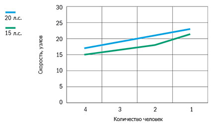

Катер Buster XS/XSr (Бустер XS/XSr)
Прочные, безопасные и лёгкие в уходе Buster XS (Бустер XS) и Buster XSr (Бустер XSr) для прогулок на внутренних водоёмах. Buster XS (Бустер XS) и её собрат с консолью управления Buster XSr (Бустер XSr) – отличный выбор для прогулок во внутренних водоёмах. Прочная, лёгкая в управлении и непотопляемая лодка, с которой справится и начинающий водитель. Грузоподъёмность лодок четыре человека вместе с грузом.
Прочное строение корпуса и непрекращающиеся разработки по улучшению качества продукции компании Buster, гарантируют моделям беспрекословное подчинение водителю при любых погодных условиях. На лодках удобно причаливать к пристани или к скалистому берегу. Рифлёные поверхности в носовой части и прочные перила обеспечивают удобную посадку и высадку из лодки и для самых маленьких членов семьи. Безопасность багажа обеспечивают закрывающиеся багажные отсеки. Мягкие настилы на сиденья из водоотталкивающего материала обеспечивают дополнительный комфорт. На модели Buster XS (Бустер XS), с внутреннего борта удобные для маленьких членов семьи ручки.
Модели Buster XS (Бустер XS) и XSr самые удобные в использовании лодки. Они не подлежат обязательной регистрации. Прочное алюминиевое строение корпуса нуждается только в регулярном мытье чистой водой. Лодки лёгкие, как в управлении, так и в перевозке на трейлере. Лодку, массой 160 кг, можно перевозить на трейлере без тормозов.
Технические характеристики катера:
| Параметр | Buster XS/XSr |
|
Длина |
4.18 м |
|
Ширина |
1.65 м |
|
Масса (Без двигателя) |
161 кг(XS)/ 166 кг(XSr) |
|
Вместимость |
4 человека |
|
Рекоменд. мощность двигателя |
6 - 20 л.с. |
|
Осадка при полной нагрузке |
0,18 м |
|
Максимальная скорость |
24 узла |
|
V-угол дна |
10° |
| График скорости | |
|  | |
Стандартное оборудование:
- Рулевое управление (XSr)
- Консоль управления, ветровое стекло (XSr)
- Чехол для аккумулятора (XSr)
- Центральный выключатель с автоматическими предохранителями (XSr)
- Ручная трюмная помпа (XS)
- Автоматическая трюмная помпа (XSr)
Дополнительное оборудование:
- Ходовой тент/стояночный
- Консоль управления, ветровое стекло (рулевое управление, штурвал, кабели управления) (XS)
- Перила на корме
- Боковые перила
- Удлинитель транца (XS)
- Удлинитель транца;
- Система запирания(трос, замки Abloy, система запирания одним ключом)
{kind=link}
{kind=link}
{kind=link}
{kind=link}